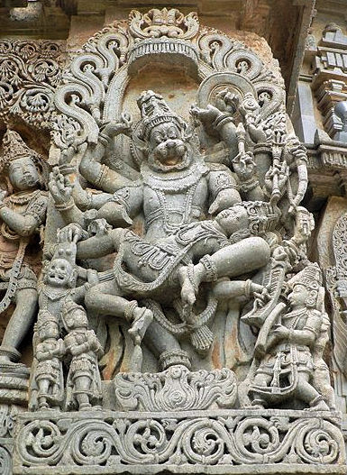
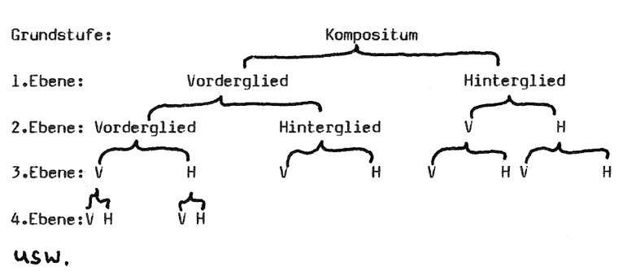
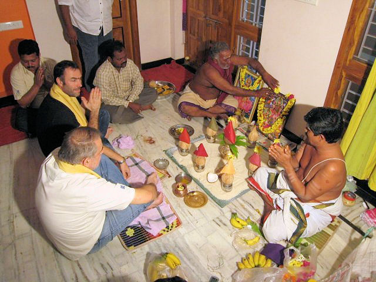
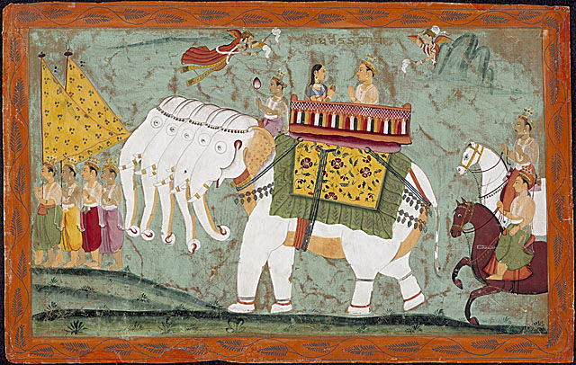

mailto:payer@payer.de
Zitierweise | cite as:
Payer, Alois <1944 - >: Sanskritkurs. -- 15. Lektion 15. -- Fassung vom 2008-12-05. -- URL: http://www.payer.de/sanskritkurs/lektion15.htm
Erstmals hier publiziert: 2008-12-05
Überarbeitungen:
Anlass: Lehrveranstaltungen 1980 - 1984
©opyright: Dieser Text steht der Allgemeinheit zur Verfügung. Eine Verwertung in Publikationen, die über übliche Zitate hinausgeht, bedarf der ausdrücklichen Genehmigung des Verfassers
Dieser Text ist Teil der Abteilung Sanskrit von Tüpfli's Global Village Library
Falls Sie die diakritischen Zeichen nicht dargestellt bekommen, installieren Sie eine Schrift mit Diakritika wie z.B. Tahoma.
Die Devanāgarī-Zeichen sind in Unicode kodiert. Sie benötigen also eine Unicode-Devanāgarī-Schrift.
गुरुशुश्रूषया विद्या
पुष्कलेन धनेन वा ।
अथवा विद्यया विद्या
चतुर्थी नैव विद्यते ॥
Das Verhältnis von durch Nomina (Substantive und Adjektive) Bezeichnetem zueinander kann man außer durch eine Genetivkonstruktion auch durch ein Tatpuruṣa (तत्पुरुष) ausdrücken. Ebenso kann man attributive Beiordnungen von Adjektiven oder appositionelle Beiordnung von Substantiven durch eine bestimmte Art von Tatpuruṣa, nämlich durch sog. Karmadhāraya (m.) = कर्मधारय ausdrücken.
तत्पुरुषः = तस्य पुरुषः "sein Knecht", d.h. als Bezeichnung dieser Art von Komposita dient ein Beispiel solcher Komposita.
| In determinativen Komposita (Tatpuruṣa)
wird ein Nomen (Substantiv oder Adjektiv) durch ein anderes
Nomen oder Adverb näher bestimmt. Das näher bestimmte Wort bildet in
der Regel das Hinterglied des Kompositum. Das Verhältnis der Vorderglieds (determinierendes Glied) zum Hinterglied (determiniertes Glied) kann sein:
Das Kasusverhältnis beider Glieder eines Kompositums ist unabhängig davon, in welchem Kasus das Kompositum steht: das Kompositum ist ja ein einziges deklinierbares Wort: z. B.
Das Geschlecht eines Tatpuruṣa ist - mit wenigen Ausnahmen - das seines Hintergliedes. |
|
Bei Auflösung des Karmadhāraya stehen beide Glieder des Kompositums im selben Kasus. |
z.B.
गुणवत्पुत्रः = गुणवान्पुत्रः = "ein Sohn mit guten Eigenschaften"
Akk. sg. गुणवत्पुत्रम्
Nom pl. गुणवत्पुत्राःपुण्यवत्क्षत्रिया = पुण्यवती क्षत्रिया = "eine verdienstreiche Kṣatriyafrau"
साधुजनाः = साधवो जनाः = "gute Leute"
इष्टदेवता = इष्टा देवता = "die gewünschte Gottheit = die Gottheit, zu der man ein besonderes Andachts- und Zufluchtsverhältnis hat"
Abb.: लक्ष्मी, die Göttin des Wohlstandes, eine इष्टदेवता mancher Inder
Gemälde von राजा रवि वर्मा (1848 - 1906)
[Bildquelle: Wikipedia, Public domain]
Zur Abfolge der Glieder in einem
Karmadhāraya ist folgende Sonderregel zu beachten:
|

Abb.: नरसिंह, ein अवतार Viṣṇus
Belur (ಬೇಲೂರು),
Karnataka (ಕರ್ನಾಟಕ)
[Bildquelle: Wikipedia, Public domain]
| Tatpuruṣaverbindungen sind möglich für Verbindungen von Nomina (Substantive und Adjektive), bei denen das Vorderglied - den Regeln der Syntax entsprechend - in jedem Kasus stehen kann. Erwartungsgemäß vertritt das Vorderglied am häufigsten einen Genetiv (षष्ठी), da dies ja der Kasus ist, um das Verhältnis von Nomina auszudrücken. |
z.B.
क्षत्रियपुत्रः = क्षत्रियस्य पुत्रः = "der Sohn eines Kṣatriya", "ein junger Kṣatriya", "ein Angehöriger der Gruppe der Kṣatriyas"
Akk. sg. क्षत्रियपुत्रम्
Gen. sg. क्षत्रियपुत्रस्य
u.s.w.गुरुभावः = गुरोर्भावः = "die Natur eines Lehrers"
धनलोभः = धनस्य लोभः = "Begierde nach Reichtum, Habsucht"
लोकगतिः = लोकस्य गतिः = "der Gang der Welt, das Verhalten der Leute"
Fast jedes Genetivverhältnis kann durch ein Tatpuruṣa ersetzt werden. Die Wenigen Ausnahmen siehe z.B. bei Kale, A higher Sanskrit grammar § 211, dort auch die entsprechenden Stellen bei Pāṇini.
Das Vorderglied eines Tatpuruṣa kann aber prinzipiell jeden Kasus vertreten. Allerdings können nicht alle syntaktisch möglichen Kasusverhältnisse durch ein Tatpuruṣa ersetzt werden. Die entsprechenden regeln findet man im Zweifelsfall bei Kale, A higher Sanskrit grammar § 203 - 217 bzw. Pāṇini 2,1,22 - 2,2,22.
| Das Vorderglied kann bei der Auflösung des Kompositums im Singular, Dual oder Plural stehen. Welche Möglichkeit vorliegt, muss aus Bedeutung und Kontext erschlossen werden. |
Beispiele:
Das Vorderglied vertritt den Akkusativ (द्वितीया): z.B. bei gewissen PPP zu Verben der Bewegung (Pāṇini 2,1,24):
ग्रामगतः = ग्रामं गतः = "einer, der ins Dorf gegangen ist"
नरकपतिता = नरकं पतिता = "eine, die in eine Hölle gefallen ist"
Das Vorderglied vertritt den Instrumentalis (तृतीया): z.B. häufig der Agens (कर्तृ) von Nominalbildungen mit kṛt-Suffixen (z.B. PPP):
देवकृतम् = देवेन / देवैः कृतम् = "von einem Gott / von Göttern gemacht"
Wäre auch auflösbar: देवस्य / देवानां कृतम् = "Tat / Tun eines Gottes / von Göttern ; Gottestat, Göttertat"बुद्धरक्षिता = बुद्धेन रक्षिता = "die, die von Buddha behütet wurde" (ein Eigenname)
| Obwohl im Sanskrit Komposita beliebiger Länge
gebildet werden können und auch sehr häufig gebildet werden (Komposita
aus 10 bis 30 Gliedern sind keine Seltenheit!), so sind doch - mit
Ausnahme der Dvandvas - alle Komposita fortschreitend hierarchisch in je
zwei Teile zu zerlegen:
 u.s.w. bis man zu den einzelnen Wortstämmen kommt. z.B. गुणवत्पुत्रकृतपुण्यम्
Dabei können verschiedene Arten von Komposita gemischt werden, z.B. Vorderglied: Bahuvrīhi (बहुव्रीहि) - Hinterglied: Tatpuruṣa usw. z.B. ब्राह्मणक्षत्रियवैश्यधर्मः
Sehr oft gibt es für ein Kompositum verschiedene Möglichkeiten der Auflösung. Welches die richtige oder zumindest die beste ist, kann nur aus dem Kontext und dem Inhalt des Textes entschieden werden. Manchmal ist eine solche Entscheidung nicht möglich. Oft sind zwei Auflösungsmöglichkeiten vermutlich vom Autor intendiert. Dann muss man in der Übersetzung beide Auflösungsmöglichkeiten wiedergeben (verbunden mit "und", "oder" "bzw." und dergleichen. z.B. पुण्यवत्पुत्रकृतम्
|
| In allen Arten von Komposita ist das
Vorderglied in der Regel der unveränderte Wortstamm. Zweistämmige
Nomina stehen im schwachen Stamm. Feminine Adjektive, die ein
folgendes Glied im Kompositum näher bestimmen, stehen im Allgemeinen
in maskulinen Stamm: z.B. पुण्यवत्क्षत्रिया = पुण्यवती
क्षत्रिया = "eine Kṣatriyafrau, die Verdienst besitzt" |
पुष्कल 3: herrlich, prächtig, reichlich
वा : oder (nachgestellt)
अथवा : oder (vorangestellt)
चतुर्थ 3 (f.: चतुर्थी): vierter
विद् "finden" 6 U विन्दति ; Pass. विद्यते ; PPP विन्न / वित्त
विद् "wissen" 2 P वेत्ति ; Pass. विद्यते ; PPP विदित
पत् "fliegen, fallen" 1 P पतति ; Pass. पत्यते ; PPP पतित
अर्ध 3: halb, m.n. Hälfte
पूजा f.: Ehrung, ehrenvoller Empfang, religiöse Verehrung (Pūjā)

Abb.: पूजा
A Puja ceremony held in Kakinada (కాకినాడ),
Andhra Pradesh (ఆంధ్ర ప్రదేశ్),
India, at the start of a seismic survey contract.
[Bildquelle: Wikiepdia, Public domain]
कुल n.: Herde, Menge, Geschlecht, Abstammung, Familie
इन्द्र m.: Fürst, Erster, Bester unter ; Götterkönig Indra

Abb.: इन्द्
Indra and Sachi Riding the Divine Elephant Airavata, Folio from a Panchakalyanaka (Five Auspicious Events in the Life of Jina Rishabhanatha [Adinatha]), circa 1670-1680 Painting; Watercolor, Opaque watercolor, gold, and silver on paper, Image: 9 1/8 x 15 1/8 in. (23.18 x 38.42 cm); Sheet: 10 5/8 x 16 3/4 in. (26.99 x 42.55 cm. Made in: India, Rajasthan, Amber
[Bildquelle: Wikipedia, Public domain]
दास m.: Sklave, Leibeigener, Diener
दासी f.: Sklavin, Leibeigene, Dienerin
काल m.: Zeit, (rechter) Zeitpunkt ; Schicksal, Tod ; Todesgott Kāla
काल 3: schwarz, blauschwarz, dunkel
पुरुष m.: Mensch, Mann, Knecht
-जन als zweites Glied von Tatpuruṣas oft Ausdruck des Plurals
स्तु 2 स्तौति ; Pass. स्तूयते ; PPP स्तुत : loben, preisen
davon:
स्तुति f.: Lobpreis, Loblied
स्तोत्र n.: (Mittel zum Preisen =) Loblied, Hymnus
सिंह m.: Löwe (Panthera leo persica)
Abb.: सिंहः (Panthera leo persica)
[Bildquelle: Wikipedia, GNU FDLicense]
व्याघ्र m.: Tiger (Panthera tigris tigris) (wörtl: Gähner)
Abb.: व्याघ्रः (Panthera tigris tigris)
Bandhavgarh National Park (बांधवगढ राष्ट्रीय उद्दान)
[Bildquelle: U.S. Fish and Wildlife Service / Wikipedia, Public domain]
इव (nachgestellt): gleichsam, wie (in Vergleichen: व्याघ्र इव पुरुषः = "ein Mann wie ein Tiger", "ein tigergleicher Mann"
एव (nachgestellt): betont das
Vorhergehende, entspricht im Deutschen oft der Betonung, eine Art Emoticon
<!>, z.B. सत्यमेव जयति "allein die
Wahrheit siegt", "gerade die Wahrheit siegt", "die Wahrheit siegt"
अरि m.: Feind (laut Thieme, Der Fremdling im Ṛgveda: ursprünglich = Fremdling)
आर्य 3: arisch, edel ; m. Arier (Selbstbezeichnung der sanskritsprechenden alten Inder, wörtlich: Gastfreundlicher (Thieme)) ; Edler, Ehrenmann
zu जन्
जाति f.: Geburt, Art, Kaste (zu जाति als Kaste siehe Basham, Wonder, S. 148ff.)
मृ 4 Ā म्रियते ; Pass. म्रियते ; PPP मृत : sterben (nach indischen Grammatikern: 6 Ā)
davon:
मरण n.: Sterben, Tod
मृति f.: Sterben, Tod
मृत्यु m.: Tod ; personifiziert: Todesgott
Lösen Sie folgende Komposita als Tatpuruṣa in Sanskrit auf und geben Sie eine deutsche Übersetzung. Geben Sie jeweils alle Auflösungen und Übersetzungen, die Ihnen möglich erscheinen. Geben Sie auch an, um welchen Kasus und welche Zahl es sich beim Gesamtkompositum handelt.
१. देवेन्द्रस्य
२. दुःखदग्धा
३. मोक्षधर्मः
४. अन्नजातानि
५. गृहकरणम्
६. शूद्रकृतेन
७. ईश्वरपूजा
८. देवेश्वरः
९. क्षत्रिययज्ञम्
१०. वैश्यभावेन
११. देवगुरोः
१२. धनलोभः
१३. गृहदासी
१४. दुःखमोहः
१५. ग्रामेश्वरम्
१६. नगरजनाः
१७. यज्ञकालस्य
१८. देवगृहाणि
१९. देवपुत्राणाम्
२०. पश्विष्टिः
२१. स्मृत्युक्तम्
२२. गुरुगृहम्
२३. सोमयज्ञेन
२४. स्वर्गगताः
२५. सुखप्रश्नम्
२६. पशुधर्मः
२७. स्वर्गलोकः
२८. ऋषियज्ञैः
२९. तत्कालम्
३०. सत्यवदनम्
१. देवतागृहम्
२. देवीस्तोत्रम्
३. ब्राह्मणगृहम्
४. वैश्यापुत्राः
५. शूद्रधर्मः
६. अग्निगृहम्
७. साधुगता
८. सत्यवचनेन
९. धर्मयज्ञानाम्
१०. सत्यधर्मः
११. अनृतवदनस्य
१२. देवीदासः
१३. द्विजदासान्
१४. अग्निदग्धम्
१५. साधुवादः
१६. बालमृगः
१७. धनसर्गः
१८. अन्नद्वेषम्
१९. देवदेवम्
२०. देवप्रश्नेन
२१. गृहजनानाम्
२२. गुरुपूजायाः
२३. गुरुगतैः
२४. स्वर्गमार्गेण
२५. नरकदेवतया
२६. गृहेश्वरः
२७. ग्रामधर्मः
२८. देवीपूजाम्
२९. देवदर्शनम्
३०. देवपादान्
३१. धनजाता
३२. बालभावेन
३३. लोकगुरोः
३४. देवपुत्रः
३५. देवमार्गम्
३६. स्वर्गसुखम्
३७. सोमसुतिः
३८. देवपूजायाः
३९. लोकधर्मेण
४०. देवजनाः
४१. पापलोकः
४२. पुण्यफलानि
४३. सत्यवादः
४४. ऋषिपुत्रः
४५. पुत्र्पुत्राः
४६. धर्मवादः
४७. देवलोकम्
४८. यज्ञेश्वरः
४९. ग्रामदेवता
५०. दुःखलोकः
५१. देवशत्रुणा
५२. क्षत्रियधर्मः
५३. द्विजेन्द्रः
५४. अग्निकृतम्
५५. साधूक्तानि
५६. ब्राह्मणभावेन
५७. देवधर्मः
५८. गृहदेवता
५९. कारुकुशीलवकृतम्
६०. द्विजातिशुश्रूषया
Abb.: ग्रामदेवता
Lord Virpanath @ Pasvadal village, Vadgam, Gujarat, India
[Bildquelle: ganuullu. -- http://www.flickr.com/photos/ganuullu/2745983608/.
-- Zugriff am 2008-12-05. --


 Creative
Commons Lizenz (Namensnennung, keine kommerzielle Nutzung, keine Bearbeitung)]
Creative
Commons Lizenz (Namensnennung, keine kommerzielle Nutzung, keine Bearbeitung)]
A) Übersetzen Sie das Sprichwort zu Beginn der Lektion
B) Lösen Sie folgende Tatpuruṣa auf:
१. बलकृतः
२. बालधनस्य
३. नरकाकम्
४. लोकगुरोः
५. जलेश्वरेण
६. जनपानम्
७. वाक्यसारथीन्
८. गुणवचनानि
९. मृगेश्वरैः
१०. बुद्धिकृतायाः
११. धर्मयज्ञेन
१२. यज्ञाङ्गानि
१३. गृहजनेन
१४. ग्रामलेखकाः
१५. नागदेवः
१६. पुण्यजिताभिः
१७. पापलोकम्
१८. सत्यवदनस्य
१९. दानधर्मेण
२०. सुखप्रश्नः
२१. दुःखमोहस्य
२२. सोमपात्राणि
२३. स्वर्गमार्गः
२४. कामधेन्वा
२५. वर्णधर्मः
२६. श्रुत्युदितम्
Abb.: नागदेवाः
Hampi (ಹಂಪೆ),
Karnataka (ಕರ್ನಾಟಕ)
[Bildquelle: Dineshkannambadi / Wikipedia, GNU
FDLicense]
Zu Lektion 16